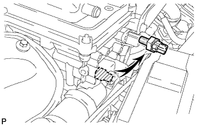
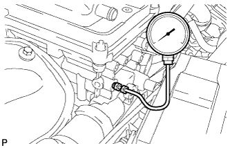
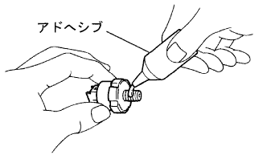
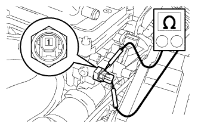

Lubrication System (2AZ-FE) Function Inspection |
| 1. Inspect Engine Oil Level |
Warm up the engine, stop it, and after 5 minutes inspect that the oil level is between the L and F marks on the oil level gauge. If the oil level is low, inspect for leaks and add oil up to the F mark.
| 2. Inspect Engine Oil Quality |
Inspect the oil for deterioration, water entry, discoloration or thinning, and replace the oil if the quality is visibly poor.
| 3. Inspect Oil Pressure |
Disconnect the oil pressure switch assembly connector.
 |
Using a deep socket wrench (24mm), remove the oil pressure switch.
 |
Install the pressure gauge via an adapter.
Engine Warm-up
Measure Oil Pressure
| Engine Speed | Oil pressure |
|---|---|
| At idle | 32kpa(0.3kgf/cm2) or more |
| 3000r/min | 170 to 300kpa(1.7 to 3.1kgf/cm2) |
Degrease the threads of the oil pressure switch.
 |
Apply adhesive 1324 to the threads.
Using a deep socket wrench (24mm), install the oil pressure switch.
Connect the oil pressure switch assembly connector.
Engine Oil Leak Inspection
| 4. Inspect Engine Oil Pressure Switch Assembly |
Disconnect the engine oil pressure switch connector.
Start the engine.
 |
Using SST (Toyota electrical tester), measure the resistance between the terminal and body ground.
| Tester Connection | Condition | Standard |
|---|---|---|
| 1 - Body ground | At idle | 10k Ω or higher |
| 1 - Body ground | Engine stopped | Below 1 Ω |
Connect the engine oil pressure switch connector.